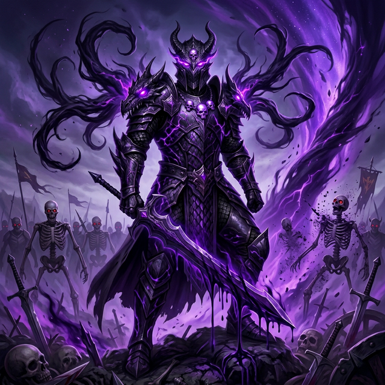

The Lore
"There Is No Victory Without Sacrifice"
In a realm where darkness crawls across the land of Eodolas and infernal creatures march under an unknown banner, one warrior and his brothers stand between oblivion and hope. This story of how you, the Hero, can aid Lord Melovar, the Heart of the Kingdom to victory. A story about challenge, will, sacrifice and courage.
The Fall of Stormgale
A Kingdom Shattered
Melovar is the youngest of four brothers and was just a child when his mother, Denera, and his father, Bor, were killed. His father was the kingdom's most skilled blacksmith and a military strategist, imparting his knowledge to the King's Guard. His mother was a beautiful seamstress and tailor, providing general services for the local townsfolk.
One evening, on a day where the skies were desolate and the very air around them became toxic to breathe, several villages in Stormgale were attacked by infernal creatures led by an unknown, demonic assailant from beyond the mountain.
Melovar and his brothers were away from the town during the attack. Upon returning home, they saw that their village and the surrounding havens of Stormgale were left in ruin. Blood, fire and the stench of death filled the air.
"Never Again."

Heart of the Kingdom
Three years after the incident… Melovar was approached by his father's most trusted friend, Zoros, who happened to be away on a personal quest of his own at the time. He was a mystic craftsman, his skill only rivalled by Melovar's father, Bor. Upon learning of Bor’s fate, Zoros decided to shelter Melovar and his brothers, and train them in understanding the craftsmanship of a blade, alongside the restraint and technique it required to wield one.
They took to their training like they were born for it. However, in comparison to his brothers, Melovar’s natural aptitude was frightening. But it was still raw and needed to be honed.
Known now as the "Heart of the Kingdom" by the people for the many sacrifices he makes to ensure the safety of his homeland, Melovar became guardian of the Stormgale Mountain. With his brothers and allies alongside him, they vowed to protect it at all costs until their dying breath.

Purging the Darkness
Melovar was indeed the most revolutionary warrior to ever grace Eodolas, but it is the bond of family that is the source of his true strength and virtue. He and his brothers had readied themselves and ventured across the border to find the means to purge the land of the creatures that once tore apart his family and homeland all those years ago.
Melovar sought out the Infernal Core, a location that Stormgale Mountain is meant to protect. Legends speak of the Infernal Core only being harnessed by a hero with a pure heart. Any flicker of doubt or hesitation and the Core would reduce to ashes. Melovar knew the perils and yet he sacrificed a part of himself, willingly, to ensure the safety of his people. It is said that a part of Melovar’s soul exists within his sword and his own fate is tied to the weapon itself. It forces him to descend upon those who would attempt to inflict harm upon his people with a fiery vengeance.
Upon defeating the legions with his newfound power, Melovar led his brothers to the burial site of their parents. He knelt in front of the ashen tombstones, his brothers quickly following suit. Melovar whispered in a low but firm voice, as if to tell the world, the heavens and the cosmos itself:
"There is no victory without sacrifice."

The Shadow Rises
But the peace that followed the crusade was fleeting. Though Melovar defeated the dark legions tearing across the shattered borderlands, a presence stirred that even the bravest warriors dared not speak of. The Corrupted Blood Knight Draefus, once known to be a legendary hero of the people many years ago was said to have been vanquished after his rise to darkness. But… He had returned and was transformed by the very darkness he once commanded. No longer bound by mortal constraints, Draefus had ascended into something far more terrifying.
His armor, once crimson with the blood of the fallen, now pulsed with an unholy energy that warped the land around him. The skies above the lands of Eodolas darkened once more, and the creatures of the abyss answered his call in numbers greater than ever before. Villages that had only just begun to rebuild fell silent overnight.
Melovar felt the shift before the messengers arrived. A cold dread settled in his chest, the same feeling he had as a boy, the night his world burned. This time, however, he would not be caught unprepared. Steeling himself against what was to come, The Heart of the Kingdom gathered his brothers and most trusted allies, sharpened his blade, and turned his gaze toward the horizon where the darkness gathered, faintly hearing echoes of dark voices:
"Only death awaits you here, champion."

Key Characters
The heroes and villains whose fates are intertwined across the realm.

Lord Melovar
Born into a hard working family, Melovar grew up to become true warrior of justice. He is firm, fair and just. From the moment his world was overturned on the fateful day as a young boy, he his three brothers depended on each other for survival. Though he is the youngest of his family, he grew to become the fierce leader of the Stormgale Mountain and would do anything to protect his people. He greatly respects those who understand the meaning of sacrifice, trust, and loyalty above all else. Easily identified when donning his crimson clad armour that sparkles with a transient dragonflame, Melovar is always striving to be a better version of himself.
Blood Knight Draefus
Once a noble and legendary hero of the people but now the towering commander of the undying legion, the Corrupted Blood Knight Draefus is the dark, demonic assailant from across the mountain who sent the infernal creatures that lay waste to Melovar's homeland. Clad in blood soaked crimson armour, adorned with skulls, he commands an army of darkness that marches to extinguish all hope from the land of Eodolas. His very presence corrupts the air and brings desolation wherever he treads and no one truly knows his goal.
Blade Crafter Zoros
Zoros was the most trusted friend of Melovar's Father, Bor. A mystic craftsman whose skill was rivalled only by Melovar's father himself. After returning a few years later from his own personal journey, Zoros learned of Bor's fate and saw the post apocalyptic Stormgale. After some time mourning the loss of his brother in arms, Zoros took it upon himself to take Melovar and his brothers into his protection and show them the meaning and craftsmanship of the blade, alongside the restraint and technique it required to wield one. His guidance would forge one of the greatest warriors the realm had ever known.